Wie wir Bestellungen packen, Modelle einbuchen, scannen und fertigen. Schritt für Schritt erklärt, zum Einarbeiten und zum Nachschlagen.
Lies die Kapitel 01 bis 04 einmal ganz. Danach reicht es, bei einer Aufgabe nachzuschlagen. Packer brauchen vor allem 05 und 08.
Orange umrandete Kästen sind Aufgaben zum Nachmachen. Orange steht für den Hauptknopf, umrandet für einen normalen Knopf im Stellwerk.
Das Stellwerk ist unser internes System. Hier kommen alle Bestellungen an, hier steht, was im Regal liegt, und hier sehen wir, was die Drucker gerade machen.
Kunden kaufen an zwei Stellen: im eigenen Shop auf unserer Website und bei eBay. Beide Wege landen im selben Stellwerk und werden gleich gepackt. Was nicht im Regal liegt, fertigt die Werkstatt nach.
| Wort | Bedeutung |
|---|---|
| Modell | Ein Fahrzeug aus unserem Programm, z. B. „MAZ-504 Autodrehkran SMK-101“. |
| Ausführung | Wie es verkauft wird: Maßstab (z. B. H0) und Bausatz oder Fertigmodell in einer Farbe. Jede Ausführung hat ein eigenes Etikett. |
| Stück | Ein echtes Exemplar im Regal. „3 frei“ heißt: drei Stücke liegen da und gehören noch keiner Bestellung. |
| Platz (Regal, Boden) | Wo ein Stück liegt, z. B. „Regal 1, Boden 3“ mit dem Code R01-B03 auf dem Etikett. |
Alle Begriffe stehen auch noch einmal in Kapitel 12.
Jedes Konto hat eine von drei Rollen. Das Stellwerk zeigt dir nur, was du mit deiner Rolle auch benutzen kannst.
| Bereich | Inhaber | Mitarbeiter | Packer |
|---|---|---|---|
| Heute, Bestellungen packen und versenden | ✓ | ✓ | ✓ |
| Scannen: Einlagern, Kommissionieren, Ausbuchen, Auskunft | ✓ | ✓ | ✓ (keine neuen Stücke) |
| Lager ansehen, Böden zählen | ✓ | ✓ | ✓ |
| Druckerhalle: Platte starten, abnehmen, fertig melden, Zustand melden | ✓ | ✓ | ✓ |
| Neue Stücke einbuchen, „Zu fertigen“ | ✓ | ✓ | – |
| Modelle anlegen und ändern, Preise, Fotos | ✓ | ✓ | – |
| Drucke planen, Drucker und Teile anlegen | ✓ | ✓ | – |
| Messen, Kategorien, Maßstäbe | ✓ | ✓ | – |
| Standard-Lieferzeit, eBay-Einrichtung | ✓ | – | – |
Konten legt Johann für dich an. Du bekommst deine E-Mail-Adresse und ein erstes Passwort. Ändere es gleich nach der ersten Anmeldung (Seite 5). Wer das Team verlässt, dessen Konto wird gelöscht; alle Anmeldungen enden dann sofort.
Das Stellwerk öffnest du im Browser unter adp-modelle.de/admin, am Rechner genauso wie am Handy.
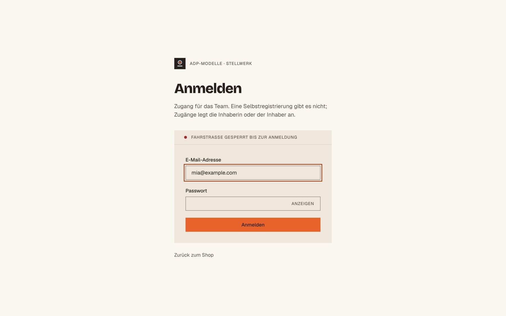
Am Rechner steht links eine Leiste mit nummerierten Bereichen, wie die Hebel in einem Stellwerk: 01 Heute, 02 Bestellungen, 03 Modelle, 04 Lager, 05 Fertigung, 06 Messen, 07 eBay, 08 Einstellungen. Die Zahl neben Bestellungen sagt, wie viele Stücke für Bestellungen gefertigt werden müssen. Darunter der große Knopf Scannen.
Am Handy sitzt die Leiste unten, gut mit dem Daumen erreichbar: Modelle, Bestellungen, Scannen in der Mitte, Lager. Alles Weitere liegt hinter Mehr. Packer sehen statt Modelle direkt Bestellungen, Scannen, Lager.
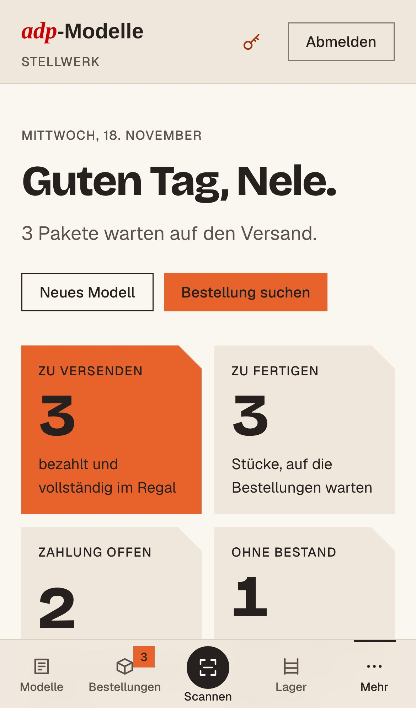
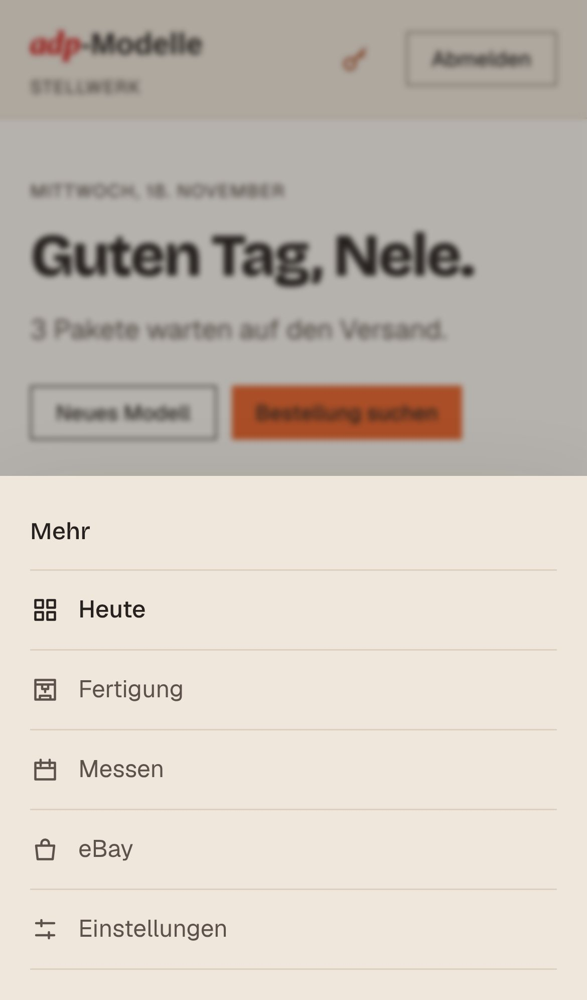
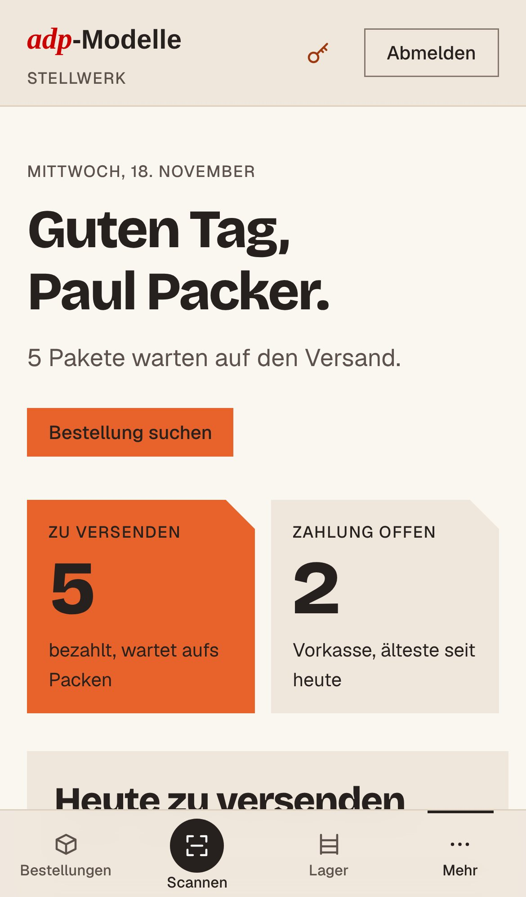
„Heute“ ist die erste Seite nach dem Anmelden. Sie beantwortet eine Frage: Was ist jetzt zu tun?
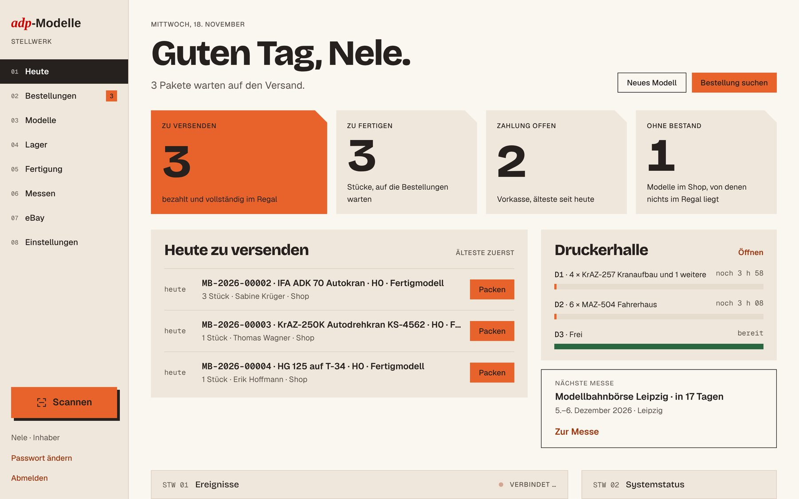
| Zahl | Was sie zählt | Was du tust |
|---|---|---|
| Zu versenden | Bezahlte Bestellungen, deren Stücke alle im Regal liegen. | Packen, Seite 9. Ein Klick auf die Kachel öffnet die Liste. |
| Zu fertigen | Stücke, auf die bezahlte Bestellungen warten, weil das Regal leer ist. | Werkstatt: bauen und einbuchen, Seite 21. |
| Zahlung offen | Bestellungen, die auf Geld warten, meist per Überweisung (Vorkasse). | Kontoauszug prüfen, Seite 11. |
| Ohne Bestand | Modelle im Shop, von denen gerade nichts im Regal liegt. | Nachfertigen oder einbuchen. |
Darunter: Heute zu versenden mit der ältesten Bestellung zuerst und je einem Knopf Packen. Rechts die Druckerhalle (was jeder Drucker druckt und wie lange noch) und die nächste Messe.
Bestellung suchen oben rechts findet eine Bestellung über Nummer, E-Mail-Adresse oder eBay-Nummer, z. B. wenn ein Kunde anruft.
Jede Bestellung ist ein Wagen, der durch vier Bahnhöfe fährt. Das Gleisbild zeigt auf einen Blick, wo jeder Wagen gerade steht.
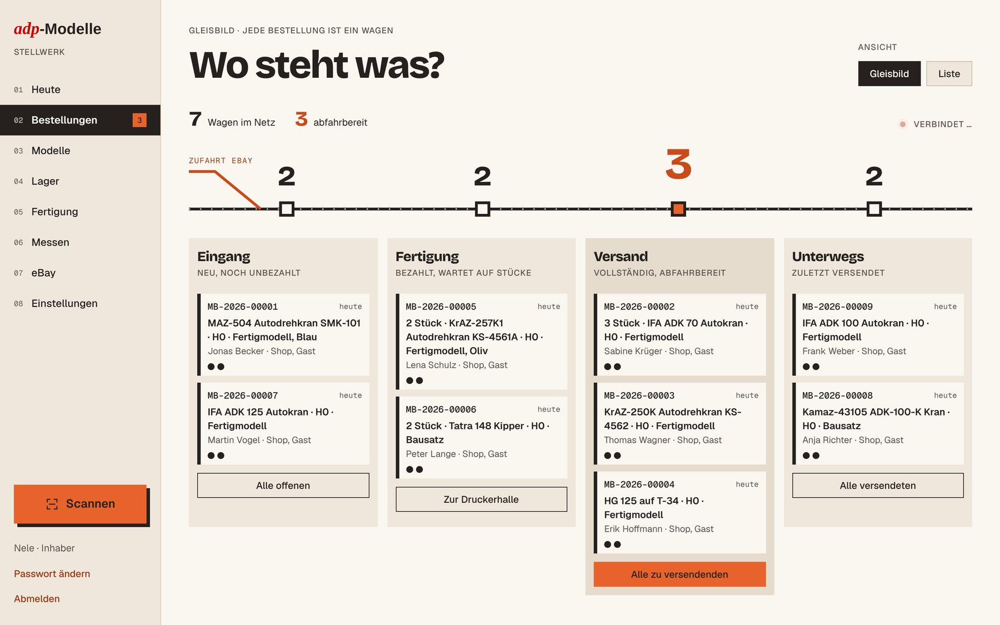
Oben rechts schaltest du von Gleisbild auf Liste. Die Liste filtert nach Zustand (Zu versenden, Zahlung offen, Versendet, Storniert, Alle) und sucht nach Nummer, E-Mail oder eBay-Nummer. Neue Bestellungen bekommen ein Lämpchen, bis jemand sie öffnet. Steht über der Liste ein Widerruf, siehe Seite 12.
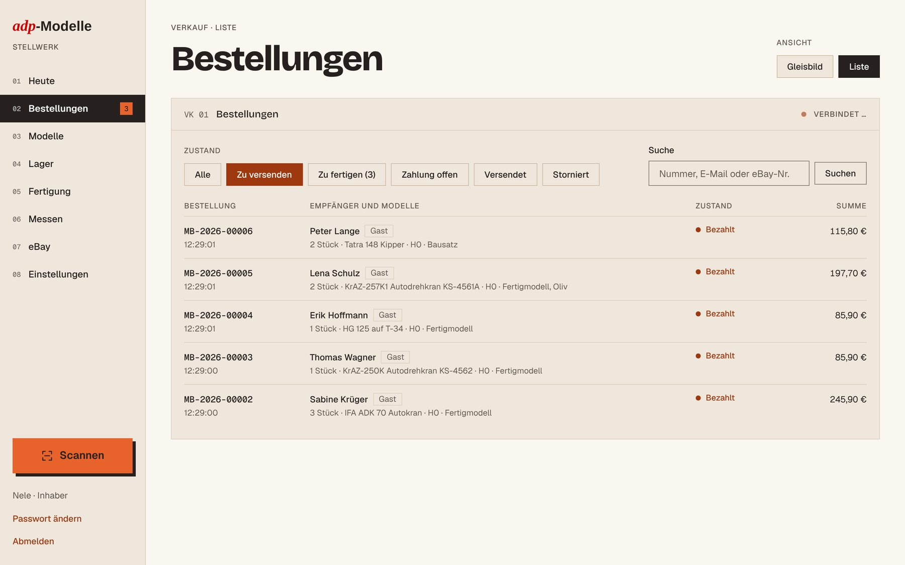
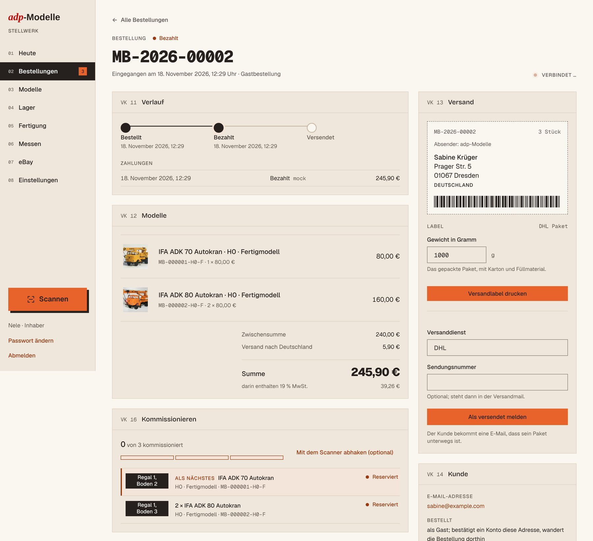
Abhaken mit dem Scanner geht weiter („Mit dem Scanner abhaken“), ist aber nicht mehr nötig. Die Pickliste reicht.
Geht ein Paket anders raus: Versanddienst und Sendungsnummer eintragen, Als versendet melden.
Label falsch? (falsches Gewicht, Adresse) Label stornieren, dann neu buchen. Das geht nur vor dem Versand. Druckt die Druckerapp nur Bilder (Brother iPrint&Label), „Als Bild“ wählen. Nochmal drucken: Label drucken.
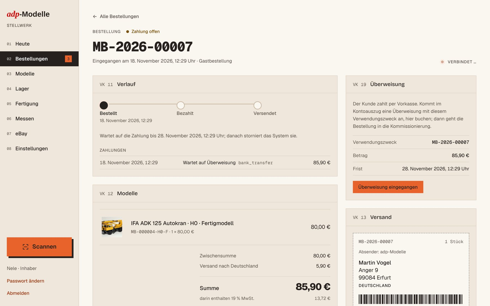
Diese Schritte erledigen in der Regel Inhaber oder Mitarbeiter. Im Zweifel nachfragen, denn hier fließt Geld zurück.
| Fall | So geht es |
|---|---|
| Bestellung stornieren noch nicht versendet | Bestellung öffnen → Bestellung stornieren …. Eine SumUp-Zahlung geht automatisch zurück, der Kunde bekommt eine Mail, reservierte Stücke werden wieder frei. |
| Einzelne Modelle erstatten | Unter Erstattung die Modelle ankreuzen, … € erstatten. Versandkosten gehen nur bei der ganzen Bestellung zurück. |
| Widerruf, noch nicht versendet | Nichts zu tun. Das System storniert und erstattet von selbst. |
| Widerruf, schon versendet | Ist die Ware zurück: Rücksendung erhalten – erstatten. Nur ein Teil zurück: „Einzelne Modelle“ wählen. Frist: 14 Tage nach dem Widerruf, das System erinnert per Mail. |
| Vorkasse zurückzahlen | Das System kann keine Überweisung auslösen. Es kommt eine Mail „Rücküberweisung …“; den Betrag auf das Konto zurücküberweisen, von dem er kam. |
| SumUp lehnt ab | Das Stellwerk zeigt die Antwort von SumUp. Dann im SumUp-Konto selbst erstatten und im Stellwerk „im SumUp-Konto erstattet, nur vermerken“ wählen. |
eBay-Bestellungen tragen das Zeichen „eBay“ und werden genauso gepackt. Erstattungen für eBay-Käufe laufen über eBay selbst.
Unter „Modelle“ liegt alles, was wir verkaufen: Fotos, Ausführungen, Preise, Bestand, eBay. Nur für Inhaber und Mitarbeiter.
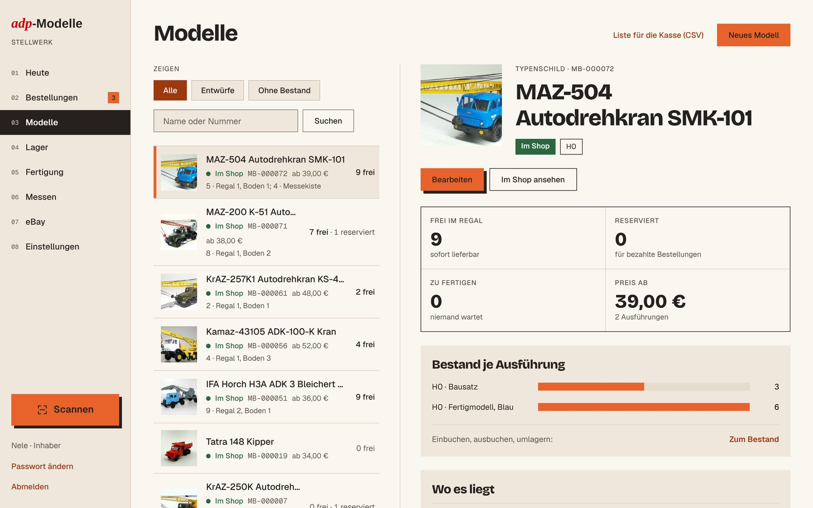
Links filterst du nach Alle, Entwürfe (noch nicht im Shop) und Ohne Bestand. Das Typenschild rechts zeigt die vier wichtigsten Zahlen: frei im Regal, reserviert für bezahlte Bestellungen, zu fertigen und Preis ab. Darunter der Bestand je Ausführung und wo die Stücke liegen. Bearbeiten öffnet die ganze Seite des Modells. Liste für die Kasse (CSV) lädt alle Artikel mit EAN und Preis für die Messekasse.
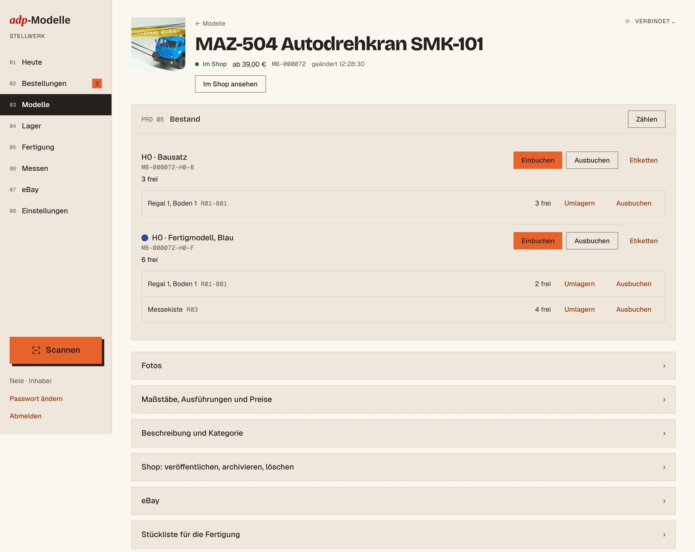
| Abschnitt | Was du dort machst |
|---|---|
| Fotos | Fotos hochladen und sortieren. Das erste ist das Hauptbild. Bei Fertigmodellen jedem Foto seine Farbe zuordnen, damit der Shop zur gewählten Farbe das richtige Bild zeigt. |
| Maßstäbe, Ausführungen und Preise | Maßstab dazu, Bausatz oder Fertigmodell, Farben, Preise. Bei Nachfertigen: Standard-Lieferzeit, eigene Lieferzeit (von–bis Wochen) oder „nicht nachfertigen“ für Einzelstücke. |
| Beschreibung und Kategorie | Texte für den Shop, Kategorie, Epochen. |
| Shop: veröffentlichen, archivieren, löschen | Ins Shop stellen, aus dem Shop nehmen (archivieren) oder ein Testmodell endgültig löschen. |
| eBay | Für jeden Maßstab einstellen, ob er bei eBay angeboten wird. |
| Stückliste für die Fertigung | Aus welchen Druckteilen das Modell besteht. |
Jedes Modell bleibt bestellbar, auch wenn das Regal leer ist. Der Shop sagt dann ehrlich, z. B. „Nur noch 3 Stück sofort lieferbar – weitere fertigen wir für dich (Lieferzeit 2–4 Wochen)“. Das Paket geht komplett raus, wenn alles da ist.
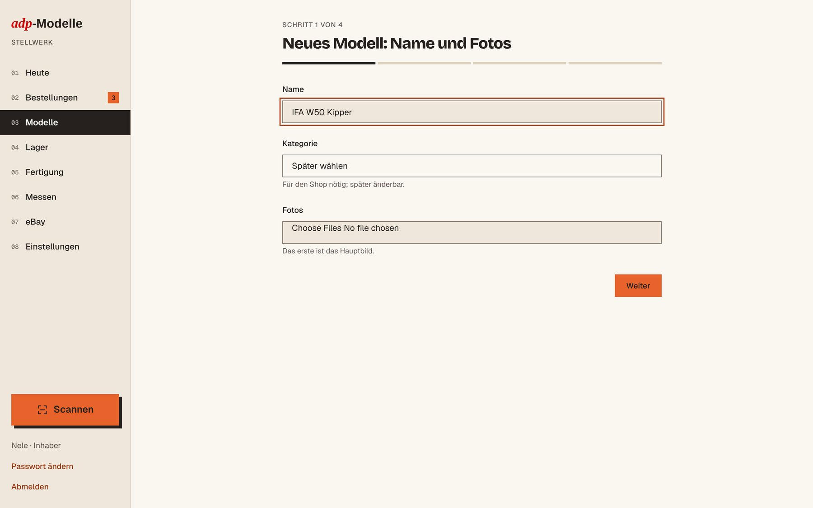
„Modell löschen“ ist nur für Testmodelle gedacht und lässt sich nicht rückgängig machen. Ein echtes Modell, das nicht mehr verkauft wird: Archivieren. Es verschwindet aus dem Shop, die Geschichte bleibt.
Das Lager zeigt jedes Regal, darin die Böden, darauf die Modelle mit Anzahl. Ein Klick auf ein Modell öffnet seine Seite.
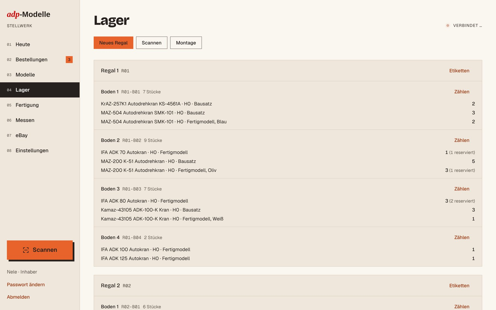
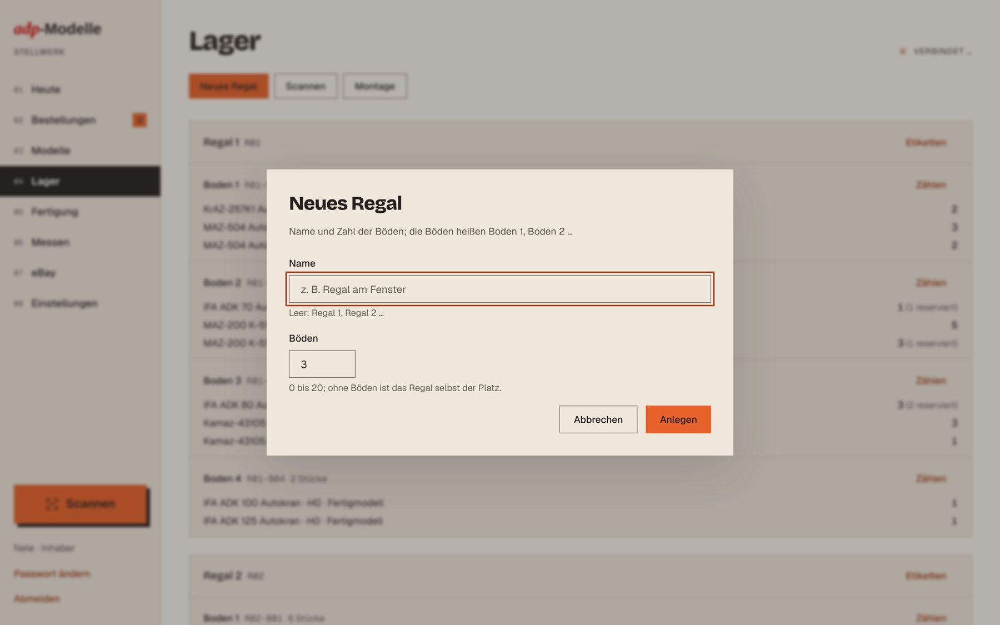
Alles Buchen passiert auf der Seite des Modells (Modelle → Modell) oder per Scanner (Kapitel 08). Jede Buchung steht unten im Verlauf: wer, wann, wie viele, wohin.
| Aktion | Wann | So geht es |
|---|---|---|
| Einbuchen | Neue Stücke sind fertig gebaut. | Einbuchen, Anzahl und Platz, „Etiketten drucken“ bleibt angehakt. Nur Inhaber und Mitarbeiter. |
| Ausbuchen | Verkauft (Messe, Laden), kaputt, verschwunden, Versehen. | Ausbuchen, Anzahl und Grund. Reservierte Stücke bleiben bei ihrer Bestellung. |
| Umlagern | Stücke ziehen auf einen anderen Boden. | Beim Platz Umlagern, Anzahl und wohin. |
| Zählen | Inventur, oder die Zahl stimmt nicht mehr. | Zählen, je Platz die Zahl eintragen, die wirklich daliegt, Zählung buchen. |
| Etiketten | Etikett fehlt, Preis geändert. | Etiketten, Anzahl, drucken, überkleben. |
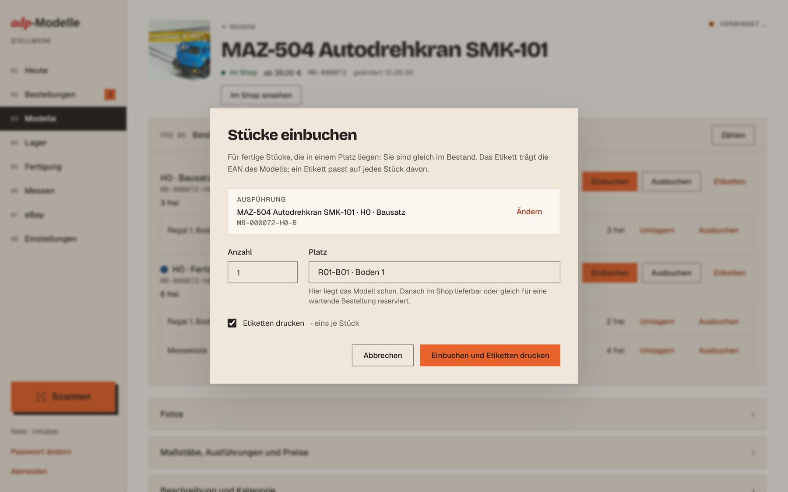
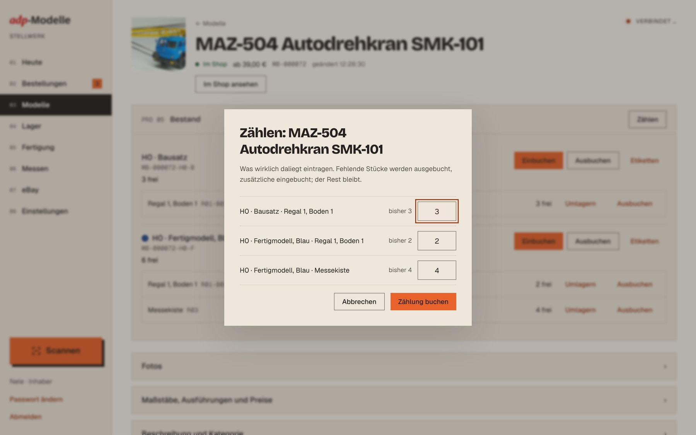
Ein Etikett nennt das Modell: EAN für Kasse und Scanner, Name, Ausführung, Artikelnummer, Preis. Dasselbe Etikett klebt auf jedem Stück dieser Ausführung. Drucker: A4-Bogen oder Brother-Rolle 62 mm; für die Brother-App „Als Bilder“ wählen.
Beim richtigen Boden Zählen und die Zahl eintragen, die wirklich daliegt. Das Stellwerk bucht die fehlenden Stücke wieder ein. Sind weniger da, als reserviert sind, bucht es nichts und sagt es; dann erst die Bestellung klären.
Oben auf der Lager-Seite steht für Inhaber und Mitarbeiter das Feld Lagerwert (LG 01): Was die fertigen Modelle auf den Regalen zusammen wert sind, gerechnet zum heutigen Shoppreis, brutto.
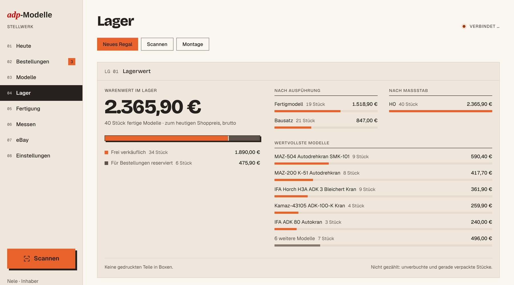
| Angabe | Was sie zeigt |
|---|---|
| Warenwert im Lager | Alle fertigen Stücke im Regal mal ihrem Shoppreis, mit der Zahl der Stücke. |
| Frei / reserviert | Der Balken teilt den Wert: frei verkäuflich (orange) und schon für bezahlte Bestellungen reserviert (dunkel). |
| Nach Ausführung, nach Maßstab | Wie viel davon Fertigmodelle und Bausätze sind, und in welchem Maßstab. |
| Wertvollste Modelle | Die fünf Modelle mit dem höchsten Wert im Regal, der Rest zusammengefasst. |
| Teile | Gedruckte Teile in Boxen stehen nur als Anzahl darunter; sie haben keinen eigenen Preis. |
Unverbuchte Stücke und Stücke, die gerade verpackt werden. Der Wert ist ein Verkaufswert, kein Einkaufs- oder Herstellwert: Herstellkosten kennt das Stellwerk nicht.
Der schnellste Weg im Lager. Funktioniert mit einem Handscanner am Rechner oder mit der Kamera des Handys.
Oben wählst du den Modus: Einlagern, Kommissionieren, Ausbuchen oder Auskunft. Kamera: Kamera starten und das Etikett in den Rahmen halten. Handscanner: einfach scannen. Ohne beides: Code unten bei „Code eintippen“ eingeben.
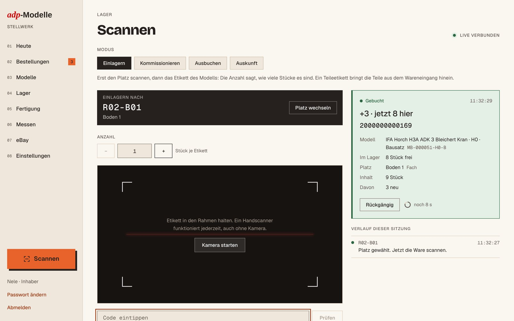
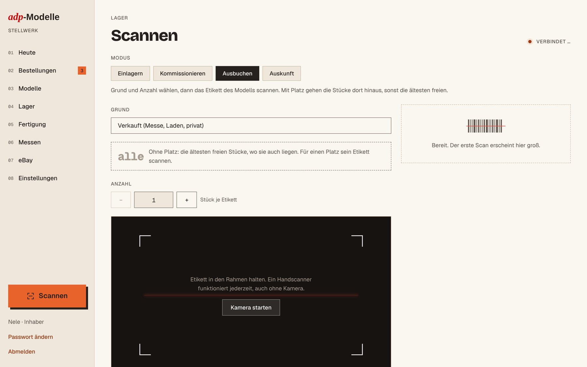
Rückgängig auf der Antwortkarte. Später geht es über die Seite des Modells (Zählen). Der Verlauf dieser Sitzung rechts zeigt alle Scans seit dem Öffnen der Seite.
Hier steht, was für Bestellungen gebaut werden muss, und was die Resin-Drucker gerade drucken.
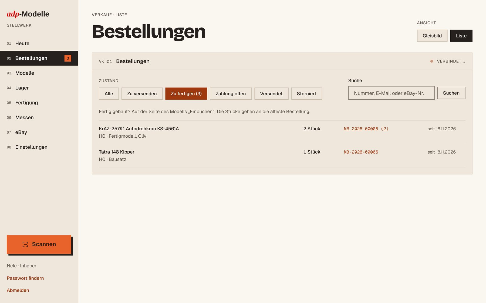
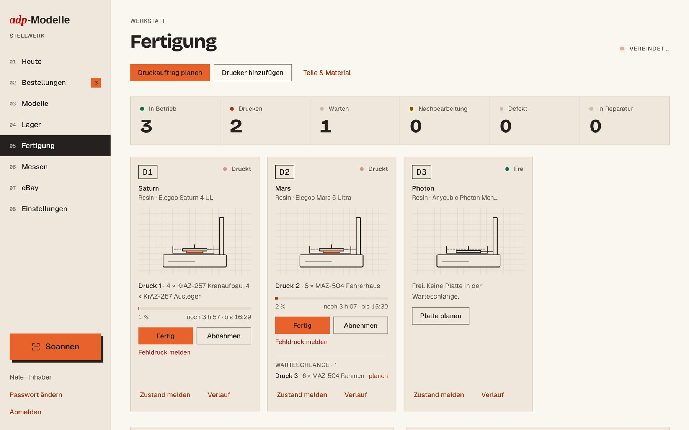
Eine Platte (ein Druckauftrag) fährt diesen Weg: wartet → druckt → Nachbearbeitung (waschen, aushärten, entstützen) → fertig. Die Knöpfe auf jeder Druckerkarte passen immer zum gerade nötigen Schritt.
| Knopf | Wann | Wer |
|---|---|---|
| Platte planen / Druckauftrag planen | Neue Platte für einen Drucker anlegen: welche Teile, wie viele. | Inhaber, Mitarbeiter |
| Druck … starten | Ist der Drucker frei, steht die nächste Platte „Als Nächstes“ auf der Karte. Platte einlegen, starten. | Alle |
| planen bei einer wartenden Platte | Wartende Platte auf einen anderen Drucker schieben, Dauer oder Notiz ändern, abbrechen. | Inhaber, Mitarbeiter |
| Abnehmen | Druck ist durch. Die Platte geht in die Nachbearbeitung, der Drucker ist frei. | Alle |
| Fertig | Gute Teile je Teil eintragen; der Rest zählt als Ausschuss. Die Teile kommen in den Wareneingang. | Alle |
| Fehldruck melden | Die ganze Platte ist hin. | Alle |
| Zustand melden | Drucker defekt, in Reparatur, wieder in Betrieb. Mit Hinweis, z. B. „Ersatzteil bestellt“. Defekt mitten im Druck macht die Platte zum Fehldruck. | Alle |
Fertige Teile warten im Wareneingang (Lager, ganz unten). Einlagern: Scannen, Modus Einlagern, erst die Box scannen, dann das Teileetikett. Aus Teilen werden unter Lager → Montage fertige Stücke.
Für Inhaber und Mitarbeiter. Packer brauchen dieses Kapitel nicht.
Unter Neue Messe Name, Tage, Ort, Stand und Öffnungszeiten eintragen. Die Messe erscheint auf der Termine-Seite im Shop und auf Heute. Ankündigen schickt sie einmal an alle, die die Messe-Post bestellt haben.
eBay ist unser zweiter Verkaufsweg. Welche Maßstäbe eines Modells bei eBay stehen, stellst du auf der Seite des Modells unter „eBay“ ein. Die Seite eBay zeigt alle Angebote und eBay-Bestellungen. Bezahlte eBay-Bestellungen landen von selbst unter Bestellungen. Die Verbindung zu eBay richtet nur der Inhaber ein.
Kategorien (wie der Katalog geordnet ist), Maßstäbe, eBay-Einrichtung und Lieferzeit fürs Nachfertigen. Die Lieferzeit gilt sofort für jedes Modell ohne eigene und kann nur der Inhaber ändern.
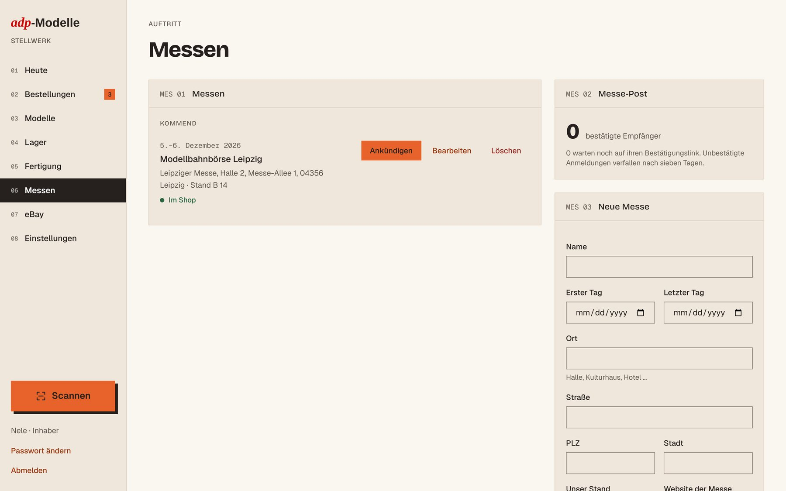
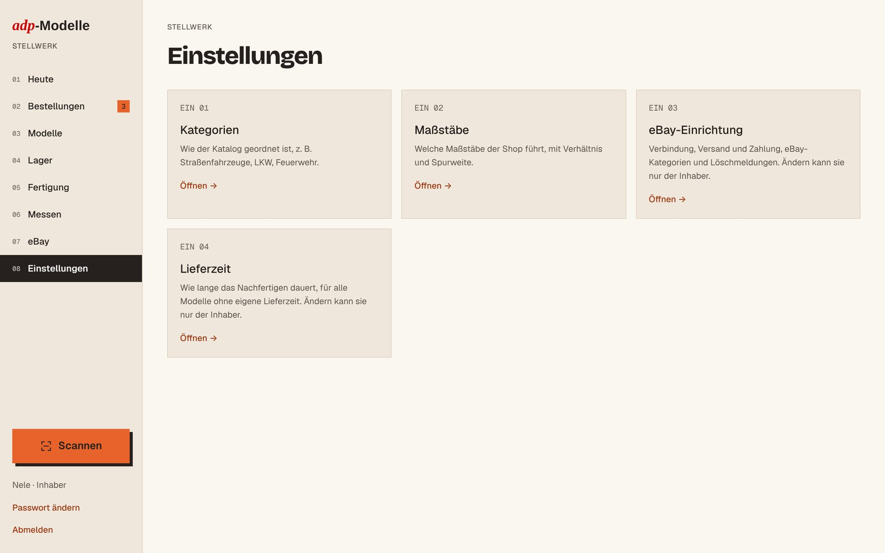
Fotobearbeitung: Fotos direkt im Stellwerk zuschneiden und aufhellen. Wird ergänzt, sobald es fertig ist. Den Lagerwert findest du schon oben auf der Lager-Seite (Seite 18).
Nach zu vielen falschen Passwörtern ist das Konto gesperrt. Johann kann es freigeben und dir ein neues Passwort geben.
Die Live-Verbindung ist kurz weg (WLAN, Handy im Standby). Sie kommt von selbst wieder. Im Zweifel die Seite neu laden. Gebucht wird trotzdem.
Es fehlt noch ein Stück. Das Bestellpult sagt, welches. Versendet wird erst, wenn es eingebucht ist. Liegt es doch im Regal, ist es nicht eingebucht: einbuchen lassen, dann rückt die Bestellung nach Versand.
Erst die Nachbarböden prüfen. Ist es weg: Auf der Seite des Modells beim Boden Zählen und die echte Zahl eintragen. Ist noch ein anderes Stück frei, bekommt die Bestellung das; sonst wird nachgefertigt. Bitte Nele kurz Bescheid geben.
Unter der Meldung steht DHLs Grund, meist Adresse oder Gewicht. Gewicht prüfen und neu versuchen. Bei der Adresse: mit dem Kunden klären. Notfalls das Label im DHL-Geschäftskundenportal buchen und die Nummer bei „Als versendet melden“ eintragen.
Vor dem Versand: Label stornieren, neu buchen. Nach dem Versand geht das nicht mehr; dann Nele oder Johann fragen.
Sofort: Rückgängig auf der Antwortkarte; der Knopf steht zehn Sekunden lang da. Später: auf der Seite des Modells beim Boden Zählen und die echte Zahl eintragen.
Bei neuen Stücken: bei der falschen Ausführung ausbuchen (Grund „Versehen“), bei der richtigen einbuchen und das neue Etikett aufkleben.
Etikett gerade und ruhig in den Rahmen halten, mehr Licht. Klappt es nicht: Code unten bei „Code eintippen“ eingeben. Die Zahl steht unter dem Strichcode.
Bestellung suchen (Nummer oder E-Mail). Versendet: Sendungsnummer steht im Bestellpult. Wartet auf Fertigung: Die Bestellung zeigt die Lieferzeit, die der Kunde beim Kauf gesehen hat.
Das ist gewollt: Wir fertigen nach. Soll es wirklich nicht mehr bestellbar sein (Einzelstück), unter „Maßstäbe, Ausführungen und Preise“ bei Nachfertigen „nicht nachfertigen“ wählen.
Die Bestellung ist dann schon storniert. Das Geld zurücküberweisen, oder mit dem Kunden eine neue Bestellung machen.
Dein Konto ist ein Packer-Konto. Das ist so gewollt. Brauchst du mehr, sprich mit Nele.
Sag Nele Bescheid. Das Handbuch wächst mit dem Stellwerk. Die aktuelle Fassung liegt im Stellwerk unter „Hilfe“.